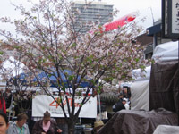
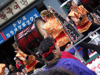

|
 みなさんこんにちは！ スタジオUSA在勤の瀬上です。 スタジオUSAがあるサンフランシスコにも、春になると桜が咲く場所があるよ。 日本人だけではなく、 現地の人にも親しまれているジャパンタウン（日本町）にも桜がいっぱい。 そのジャパンタウンで、毎年春に開かれる「北加桜祭り」に行ってきてみたよ。 「北加」というのはカリフォルニアの北の方、という意味なんだ。 今年はサンフランシスコのジャパンタウンが１００周年記念ということもあって、 例年以上の賑わいだったみたい。  沿道を埋め尽くした人たちが、サンフランシスコ市長やミスジャパンタウン、 太鼓のパフォーマンスや樽神輿（たるみこし）といった 長〜いパレードを楽しそうに見ていたよ。 会場にはゲームやアニメのキャラクターになりきった人たちも沢山いたんだけど 中にはソニックのTシャツを着た人もいたんだ！ ちなみにアメリカは広いけど、 サンフランシスコのジャパンタウンのような日本人街があるのは３つの街だけなんだって。 その中のひとつ、サンフランシスコのちょっと南にあるサンノゼで行われた 『ビデオ・ゲームズ・ライブ！』というイベントに行ってきたので紹介するね。 アーケードゲームから家庭用ゲーム、古いものから新しいものまで、 幅広いゲームの曲をオーケストラで演奏するショウだったんだけど、会場はビッシリ満員！ 最初は、色々なゲームの代表的なフレーズをちょっとづつ繋げたメドレーだったんだけど、 スクリーン上の絵と同期して曲が変わるたびにどよめきが上がっていたよ。 その後は、有名なゲームをタイトルごとに演奏していっていたんだけど… じゃじゃーん！ スクリーンにはソニックの生みの親、中さんが登場！ コメントに続いてソニックのメドレーが始まったよ！ メガドライブのソニックからソニックヒーローズに至るまで、 たくさんのソニックの冒険の映像をバックに、 オーケストラアレンジで聴くソニックの音楽はとっても新鮮！ 元がオーケストラのゲーム音楽を演奏しているときは、 豪華なプロモーションビデオを観ているような感じだけれど、 ソニックみたいにオーケストラじゃない曲のアレンジを聴くのは面白かったよ。 このイベントは、日本でやることも企画しているらしいので、 ショウが決まったら行ってみてね！ 最後に、プレゼントのお知らせ！ このコラムを読んでくれている皆さんに、アメリカならではのソニックグッズを探してきたよ。 そのグッズとは「ソニック gamer graffix」！ DSやゲームキューブに貼り付けて、ゲーム機本体もソニック仕様に出来ちゃう優れモノ！ きっと周りのソニックファンは持っていないと思うので、当選した人は自慢してね！ 応募は下のバナーから出来ます。 ↓ 今回の「スタジオＵＳＡ通信」はここまで。 また次回も、アメリカならではの情報をお届けするのでお楽しみに！
"LOST AND FOUND" シャドウ・ザ・ヘッジホッグ ヴォーカルトラックス シリーズ恒例のヴォーカル曲集。セガダイレクトでもお求めになれます。 "シャドウ・ザ・ヘッジホッグ" オリジナルサウンドトラック 2枚組、90曲を超えるボリュームでセガダイレクト専売にて好評発売中。 |

当サイトに掲載する文書・図版・写真等一切を問わず複製、転載することを禁じます |